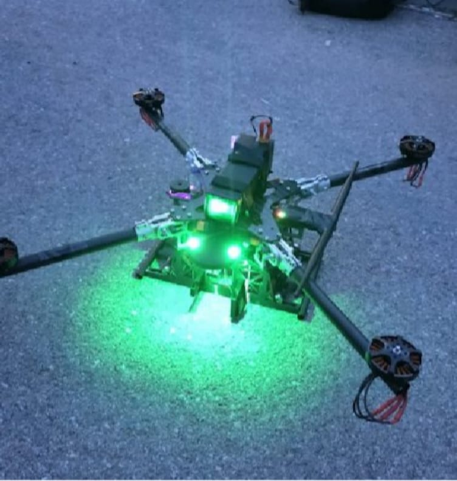

Tanışma Kahvaltısı
Yeni üyelerle kaynaşmak, iletişimi ve takım ruhunu güçlendirmek için düzenlediğimiz toplu kahvaltı.
İş birliği: Bugii Lounge


Bursa Teknik Üniversitesi · Makine Teknolojileri Robot ve Otomasyon Topluluğu
2025–2026
45 faaliyet 2.034 katılım 12 TEKNOFEST projesi
Sunuş
MATRO; Bursa Teknik Üniversitesi'nde insansız hava, kara, deniz ve su altı sistemleri, robotik, haberleşme ve enerji teknolojileri alanlarında proje geliştiren öğrenci topluluğudur.
2025–2026 döneminde yeni üyelerimizi eğitim kamplarıyla atölyeye hazırladık, sanayinin önde gelen kuruluşlarına teknik geziler düzenledik, fuar ve festivallerde stant açtık, ilkokuldan liseye yüzlerce öğrenciyle buluştuk ve 12 farklı TEKNOFEST kategorisinde proje yürüttük.
Bu kitapçık, topluluğumuzun üniversiteye sunduğu faaliyet raporundan derlenmiştir. Her sayfadaki tarih, yer ve katılımcı bilgisi o rapordaki kayda dayanır.
Sezon özeti
Aylara göre faaliyet sayısı
Tarihi ay düzeyinde bilinen faaliyetler; sürekli yürüyen TEKNOFEST proje çalışmaları dahil değildir.
Sezonun dereceleri

Bölüm 01
Her dönem yeni üyelerle başlayan yolculuğumuz, tanışma buluşmaları ve atölyede biten eğitim kamplarıyla sürüyor. Amacımız, ilk gün amfide oturan öğrencinin sezon sonunda bir proje takımında sorumluluk alabilmesi.
Bölüm 01
Yeni üyelerle kaynaşmak, iletişimi ve takım ruhunu güçlendirmek için düzenlediğimiz toplu kahvaltı.
İş birliği: Bugii Lounge

Mühendislik yaklaşımı, proje geliştirme mantığı, tasarım süreçleri ve yazılımın temelleri; yeni üyelerin teknik süreçlere hızla uyum sağlaması için.

Bir ay süren yoğunlaştırılmış atölye ve eğitim programı: mühendislik temelleri, tasarım, takım çalışması ve problem çözme; öğrenilenler atölyede uygulandı.

Proje dönemine hazırlık için ileri seviye tasarım, simülasyonla test, kodlama ve hata ayıklama; katılımcılar ekipler hâlinde teknik problemleri analiz etti.
Bölüm 02
Teorik bilgiyi sahadaki uygulamayla birleştirmek için havacılık, savunma, otomotiv ve Ar-Ge kuruluşlarına teknik geziler düzenledik; sektörün mühendislerini kampüse davet ettik.
Öne çıkan
Havacılık, savunma ve motor alanındaki mühendislik faaliyetlerini hangarda yerinde inceledik. Katılımcılar teorik bilgilerini endüstriyel pratikle birleştirdi, sektördeki iş ve staj imkânları hakkında doğrudan bilgi aldı.
Kampüste sanayi
Havacılık teknolojileri ve uçak bakım-onarım süreçleri üzerine sunumun ardından düzenlenen workshop'ta katılımcılar gerçek saha problemleri üzerinde ekipler hâlinde çalıştı; sanayi ile mühendislik öğrencileri arasındaki bağ güçlendi.
İş birliği: Turkish Technic, UHSST, PARGE
Bölüm 02

Türkiye'nin önde gelen Ar-Ge merkezlerinden birinde laboratuvarları, elektrikli araç projelerini ve ileri düzey mühendislik çalışmalarını gözlemledik.
İş birliği: TÜBİTAK MAM

Mekatronik Mühendisleri Derneği iş birliğiyle üretim alanlarını, kullanılan teknolojileri ve çalışma süreçlerini yerinde tanıdık.
İş birliği: ERTEV, Ermetal Grup Şirketleri, Mekatronik Mühendisleri Derneği

Hareket kontrol teknolojileri ve mekatronik sistemlerdeki mühendislik çözümlerini inceledik; firmanın yönetim kurulu başkanı ekibimizi ağırladı.
İş birliği: HKTM Hidropar Hareket Kontrol Teknolojileri Merkezi

Havacılıkta üretim, tasarım, bakım ve mühendislik süreçlerini; mühendislik ekiplerinin çalışma düzenini yerinde gözlemledik.
İş birliği: Alp Havacılık

Türkiye'nin uzay vizyonunu inceledik; Türkiye Milli Uzay Programı kapsamında ilk astronotumuz Alper Gezeravcı'nın sunumunu dinledik.
İş birliği: GUHEM

Topluluğumuzu temsilen katıldığımız programda yerli ve milli havacılık ve uzay projelerini, üretim hatlarını ve mühendislik altyapısını yerinde inceledik.
İş birliği: TUSAŞ
Bölüm 03
Robotlarımızı atölyeden çıkarıp fuar alanlarına, festivallere ve kampüs etkinliklerine taşıdık. Her stant, projelerimizi yeni insanlara anlatma ve iş birlikleri kurma fırsatı oldu.
Geliştirdiğimiz robotik projeleri ve kazandığımız ödülleri ziyaretçilere ve öğrencilere sergilediğimiz tanıtım standı.

Bursa'nın en büyük yazılım ve teknoloji festivalinde topluluk partneri olarak projelerimizi yazılımcılara ve sektöre tanıttık.
İş birliği: GDG Bursa

Endüstriyel makine ve imalat teknolojilerindeki gelişmeleri takip etmek ve topluluğu tanıtmak için kendi standımızı açtık.
İş birliği: BTSO

Havacılık ve teknoloji festivalinde insansız sistem prototiplerimizi ve ödüllerimizi sergileyerek ziyaretçileri bilgilendirdik.
Bölüm 04
İlkokuldan liseye kadar farklı yaş gruplarındaki öğrencilerle buluştuk. Atölyemizi gezdirdik, okullara robotlarımızı götürdük, Arduino ile ilk devrelerini kurdurduk.
Sezonun en kalabalık buluşması
Armutlu Avukat Necati Toker İlkokulu · Aralık 2025
Bölüm 04

Tekirdağ'dan gelen lise öğrencilerini atölyemizde ağırladık; takımlarımız araçlarını ve üretim süreçlerini anlattı.

Lise öğrencilerine temel devre elemanlarını ve algoritma mantığını aktaran giriş seviyesi eğitim.

Genç öğrencilere bilimi sevdirmek için robotik projelerimizi okul bünyesindeki standımızda sergiledik.
İş birliği: Bursa Büyük Kolej

Liseli öğrencilere TEKNOFEST süreçlerini anlattık, takımlarımızın atölyelerini birlikte gezdik.
İş birliği: Uluslararası Murat Hüdavendigar Lisesi
Bölüm 05
Yarışmalarda edindiğimiz tecrübeyi paylaşmayı, kazandığımız dereceler kadar önemsiyoruz.
Genç MÜSİAD Bursa · 12 Mayıs 2026
Ar-Ge ve inovasyon çalışmalarıyla geliştirilen, ticari potansiyeli yüksek projemiz teknik jüri değerlendirmesinde birincilik ödülüne layık görüldü.
TEKNOFEST 2025 · MATROVER · 2025
Zorlu arazide otonom sürüş, haritalama ve çevre tanıma yapabilen aracımızla Türkiye üçüncülüğü ve en hızlı araç unvanı.
BTÜ Turkuaz Salon · 12 Aralık 2025
Proje süreçlerini sunan farklı takımlarımız aynı yarışmada üçüncülük, dördüncülük ve beşincilik elde etti.
Bursa Teknik Üniversitesi · 29 Aralık 2025
Yazılım ve otonom sistem çözümleri üzerine hackathonda geliştirdiğimiz çözümle üçüncülük.
Türkiye Uzay Ajansı · 1 Nisan 2026
Uzay teknolojileri ve veri analitiği odaklı hackathonda algoritma geliştirme çalışmaları yürüttük.
Bölüm 05

Formula Student yarışmalarında görev alan üyelerimiz deneyimlerini aktardı. Aynı sezon 20 üyemiz araç tasarımı, mühendislik analizleri ve teknik raporlama çalışmalarında yer aldı.

Yarışmalarda derece elde eden üyelerimiz teknik deneyimlerini öğrencilerle paylaştı.


Bölüm 06
Hava, kara, deniz ve su altı sistemlerinden endüstriyel robotiğe, nükleer enerjiden tarım teknolojilerine uzanan on iki yarışma projesi, lisans ve lisansüstü öğrencilerinden oluşan takımlarla Özdemir Bayraktar TEKNOFEST Atölyesi'nde yürütüldü.
| Takım | Kategori | Ekip |
|---|---|---|
| ASHİNA | İnsansız Hava Aracı | 8 |
| MATRİS | Sürü İnsansız Hava Aracı | 15 |
| ZEMHERİ | Su Altı Roket | 15 |
| İSS | İnsansız Su Altı Sistemleri | 15 |
| LODOS | İnsansız Deniz Aracı | 15 |
| GÖKSAV | Hava Savunma Sistemleri | 15 |
| MATROVER | İnsansız Kara Aracı | 35 |
| İleri Otonom Sistemler | Tasarım ve Operasyon | 25 |
| PUSULA | Sanayide Robotik Uygulamalar | 20 |
| Robolig | Üniversite Düzeyi | 5 |
| ALHAZEN | Nükleer Enerji Teknolojileri | 12 |
| ASHİNA İNOVASYON | Tarım Teknolojileri | 12 |
Takım çalışmaları BTÜ Özdemir Bayraktar TEKNOFEST Atölyesi'nde yürütülür. İş birliği yapılan kurumlar arasında TEKNOFEST, TUSAŞ, ASELSAN, TENMAK, Luna Robotics ve Crowtec yer alır.

TEKNOFEST · İnsansız Hava Aracı
Otonom uçuş, faydalı yük bırakma ve aerodinamik tasarım üzerine çalışıldı; geliştirilen İHA ile yarışma sürecine aktif katılım sağlandı.
8 kişilik ekip
TEKNOFEST · Sürü İnsansız Hava Aracı
Birden fazla İHA'nın koordineli görev icra edebilmesi için haberleşme, gömülü yazılım ve kontrol algoritmaları geliştirildi.
15 kişilik ekip
TEKNOFEST · Su Altı Roket
Su altından fırlatılıp hedef vurabilen roket sistemi tasarlandı; hidrodinamik gövde, fırlatma kararlılığı ve isabet üzerine çalışıldı.
15 kişilik ekip

TEKNOFEST · İnsansız Su Altı Sistemleri
Sızdırmazlık simülasyonları, otonom sürüş ve su altı nesne tespiti yapabilen prototip geliştirildi ve yarışmada performans sergilendi.
15 kişilik ekip
TEKNOFEST · İnsansız Deniz Aracı
Su üstünde otonom rota takibi, engelden kaçış ve haritalama yapabilen otonom tekne geliştirildi, seyir performansı test edildi.
15 kişilik ekip

TEKNOFEST · Hava Savunma Sistemleri
Tehdit algılama, otonom hedef takibi ve kilitlenme kabiliyetine sahip entegre hava savunma kulesi üretildi.
15 kişilik ekip

TEKNOFEST · İnsansız Kara Aracı
Zorlu arazide otonom sürüş, haritalama ve çevre tanıma algoritmalarına sahip platform geliştirildi. Türkiye üçüncülüğü ve en hızlı araç unvanı kazanıldı; öğrenciler için staj ortamı oluştu.
35 kişilik ekip

TEKNOFEST · Tasarım ve Operasyon
Lisans ve lisansüstü öğrencileriyle insansız kara ve hava araçlarının koordineli çalışması ve sensör füzyonu ile görev gereksinimlerinin karşılanması.
25 kişilik ekip

TEKNOFEST · Sanayide Robotik Uygulamalar
Fabrika otomasyon süreçlerine yönelik manipülatör tasarımı ve görüntü işleme tabanlı kalite kontrol projesi sunuldu.
20 kişilik ekip
TEKNOFEST · Üniversite Düzeyi
Endüstriyel robot kollarının programlanması, hareket planlaması ve otonom üretim hatlarının simülasyonu üzerine hazırlık çalışmaları sürüyor.
5 kişilik ekip

TEKNOFEST · Nükleer Enerji Teknolojileri
Nükleer santral güvenliği, radyasyon takibi ve otonom müdahale robotları üzerine teorik ve pratik tasarım çalışması.
12 kişilik ekip

TEKNOFEST · Tarım Teknolojileri
Tarım arazilerinde otonom analiz, hastalık tespiti ve verimli ilaçlama yapabilen robotik sistem tasarlandı.
12 kişilik ekip
Bölüm 07
Atölyede uzun saatler geçiren ekiplerimizi sahada, parkta ve spor salonunda da bir araya getirdik.

Atölyede ve teknik çalışmalarda aktif arkadaşlarımızın motivasyonu için vizeler öncesi dostluk maçı.

Dönem sonu stresini azaltmak ve ekip ruhunu güçlendirmek için bahar pikniği.

İletişimi ve takım çalışmasını geliştirmek için topluluk içi voleybol turnuvası.
Kronoloji
Teşekkür
Bu sezon kapılarını açan kurumlara, atölyemize destek olan sponsorlarımıza ve bizi ağırlayan okullara teşekkür ederiz.
İş birliği yapılan kurumlar
2025–2026 sponsorlarımız


Atölyede başlayan fikirleri sahaya taşıyoruz.

Bursa Teknik Üniversitesi Makine Teknolojileri Robot ve Otomasyon Topluluğu · 2025–2026 Faaliyet Raporu